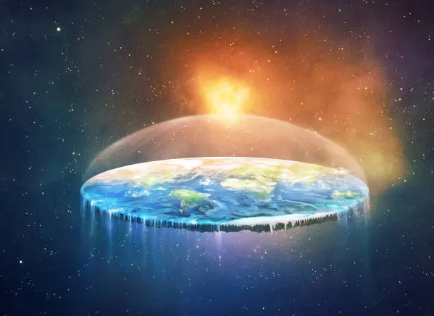

Second h1 Tag here
Welcome, fellow truth-seekers, to our community dedicated to uncovering the reality of our Flat Earth. For far too long, we’ve been told that we live on a globe, a spinning ball hurtling through an endless void. Yet, a growing number of independent researchers and critical thinkers have come forward with undeniable observations that challenge this long-standing narrative. Here, we strive to highlight evidence that supports a level, plane-like Earth and invite you to explore the data with an open mind.
At the heart of our movement lies a simple yet powerful idea: we shouldn’t simply trust mainstream institutions without scrutiny. From disappearing horizons to misleading images of our planet from space, we see example after example of inconsistencies that demand further investigation. By questioning commonly accepted theories—like gravity as we’ve been taught—and revisiting real-world experiments related to curvature and perspective, we believe that the details paint a remarkably different picture of our world.M
Our community stands on the foundation of curiosity and transparency. We encourage members to experiment, document findings, and engage in respectful conversations about the shape of Earth. Whether you’re new to the concept or have been researching for years, our goal is to create a supportive environment where all voices can be heard and all evidence examined. Together, we challenge the status quo and endeavor to reveal truths that conventional science has too readily dismissed.